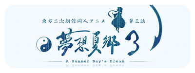
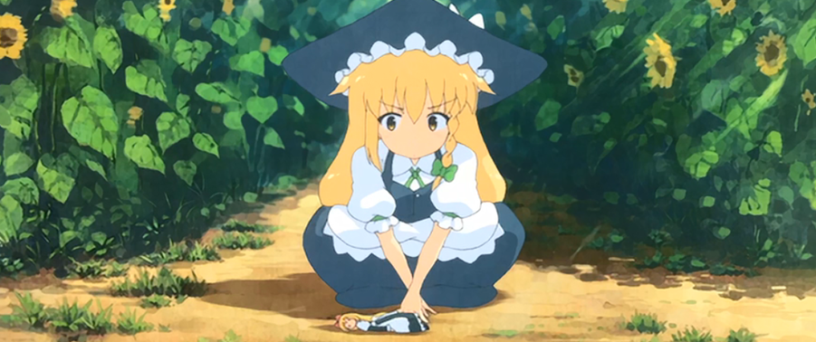

本版块介绍东方Project两大同人动画作品，分别是幻想万华镜和梦想夏乡。
两个系列虽然都是由不同的同人社团制作，但是动画的质量十分高。
也因为这个原因，更新往往是几年出一集，被爱好者们称为“奥运番”。

- 
-
幻想万华镜
《幻想万华镜》，全名《幻想万华镜 ~The Memories Of Phantasm~》，是同人社团满福神社创作的东方Project二次创作同人动画，于2011年开始推出，其音乐由幽闭星光负责制作。
本动画并非东方的官方动画化，亦不是商业动画，现有《春雪异变之章》，《红雾异变之章（前篇）》，《红雾异变之章（中篇）》，《红雾异变之章（后篇）》，《花之异变之章（前篇）》，《花之异变章（后篇）》，《巨大妖怪之章》，《永夜异变之章（前篇）》和《永夜异变之章（中篇）》、《永夜异变之章（后篇）》，《试胆大会（前篇）》，《试胆大会（后篇）》十二话，除此之外的其他仅为PV。在《红雾异变之章（后篇）》结尾预告下一话将改编《东方星莲船》。
但是，满福神社在5月24日发布的第五话预告片中，第五话为《东方花映冢》而不是原来的《东方星莲船》。然后在10月18日发布的《花之异变之章（后篇）》结尾预告下一话有可能将改编《东方风神录》。尽管如此，《春雪异变之章》在发布前即被东方Project爱好者赋与了很高的期望，其音乐亦受到不少好评。
作品相关
在博丽神社例大祭SP（特别即卖会）上由“满福神社”（同人社团名）出的东方红魔乡二次同人MV。画质和帧数都达到了相当高度。人设圆润，短短的战斗画面也非常华丽。 这部充满OP风格的动画，选用同人音乐创作集团幽闭サテライト（幽闭星光）精心制作的新歌《色は匂へど 散りぬるを》（原曲：神々が恋した幻想郷）。
虽然有宣传PV的性质，但因为长期没有更新所以被许多人认为是大坑，全长16分18秒。ED后的预告将是有关风神录的内容。除了春雪异变之章外，满福还在c80上放出PV2:月に丛云华に风(东方地灵殿)、博丽神社例大祭放出PV3:华鸟风月(东方花映冢)以及c82上放出泡沫、哀のまほろば(ver0.5)(东方永夜抄)因此也被吐槽满福专注PV30年。
关于泡沫、哀のまほろば,也已在2012秋10月份放出了完整版。并非老牌社团大手笔，但据说有ufotable的制作人员参与其中。在2013年8月12日的c84上满福神社发售第一话《春雪异变之章》的BD版，由同人声优相ぴか为片中全部角色配音，配音音轨作为BD特典附送，弥补了DVD版无声优配音的遗憾。
相沢ぴか此前曾为同人游戏《东方Sky Arena 幻想乡空战姬》中为魔理沙等角色配音，并曾在NICONICO动画投稿为《幻想万华镜 第1话 春雪异变之章》配音的视频，这次的配音版为全新录制，因此和NICONICO动画上公开的版本相比会有所不同。
幻想万华镜 花之异变剧照最新作品信息
第10话：永夜异变之章（后篇）
故事取材：《东方永夜抄》
片头曲：泡沫、哀のまほろば（原曲：エクステンドアッシュ ～ 蓬莱人/ 月まで届け、不死の烟）
片尾曲：照うさゎゐくうぃの幸せ（原曲：ヴォヤージュ1969（旅人1969））
-
东方梦想夏乡
《东方梦想夏郷 -A Summer Day's Dream-》，简称“梦想夏乡”，是一部由同人社团舞风（MAIKAZE）制作的东方Project二次同人动画。2008年12月29日，《东方梦想夏郷》第一话在C75首发。
作为同人作品，《东方梦想夏郷》以华丽的声优阵容引起广泛议论。动画的制作组舞风曾表示预定全12话，但官方出于各种原因在推特平台上发表文段，表明动画可能在第四话结束，后面的部分可能以其他形式创作。因为更新时间间隔太长，迄今为止每四年更新一次，所以也被称为“奥运番”。《东方梦想夏郷》第二话、第三话动画分别已在C82、C90同人展上发售。
背景与剧情
什么是幻想乡，幻想乡，那是由结界所隔开，悄然存在于现代社会背面的另外一个世界。
那里是人类 以及人类之外的妖精 妖怪 神明等得以和平共处的理想乡。
守护结界的巫女，博丽灵梦所住的神社，博丽神社，在那里，每年一到夏季就会举办大型宴会。
每到这时，神社就会因幻想乡的居民而热闹非凡，今年 夏天又一次降临幻想乡......
梦想夏乡2.5话剧照作品历程
《东方梦想夏郷》第一话
由时音-TOKINE所率领的同人社团“舞风（MAIKAZE）”在2007年宣布要把知名同人弹幕游戏系列《东方Project》改编成二次同人动画作品（同人不等于二次同人！）。
舞风于2007年11月30日于YouTube公开了长达2分19秒的预告片。并在2008年12月公开了作品的CV名单。其中包括中原麻衣、泽城美雪、井上喜久子等日本著名声优。这等强大有爱的声优阵容，足以媲美渡边制作所在1999年所推出的知名同人格斗游戏《QOH’99’》（中文译名《格斗女皇》）。
由于时音在网站中表明《东方梦想夏郷》是在东方Project原作者ZUN的默许下进行制作，加上如此豪华的声优权参与演出，想必会被许多东方迷误以为是“公认动画版”吧？但必须说明的是，此作与《幻想万华镜》一样是属于二次同人性质的动画作品，并非上海爱丽丝幻乐团官方动画（即平时所说的“东方二次同人动画”）。ZUN也曾明确表示不希望人们对东方系列的二次同人作品进行过度宣传和传播，以免造成知名的二次作品为官方作品的误解。
除此之外，《东方梦想夏郷》官方网站在2008年12月15日正式开设，而且作为本系列第一弹的《东方梦想夏郷》第一话也当年的C75同人展摊位上正式开卖。《东方梦想夏郷》第一话于2008年12月29日在C75同人展上发售。至于是否会有第二话，何时有第二话的问题在第一话发布后舞风官网并没做出明确表态。
待续……